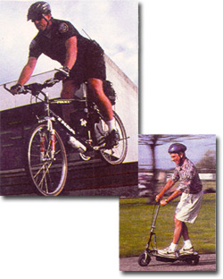
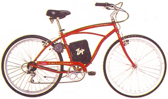

BITS AND PIECES
The wait's over for a fun, fast, and affordable e-bike.
The solar electric bike has sped merrily along since the fun, fast, and exorbitantly priced $1,100 experimental prototype we tested and wrote about a couple of years ago. Since then, we're happy to report, the design has been picked up and mass-manufactured: electric hikes are now available as either add-on power kits, for as low as $300 to $600, or as full-production electric models, which sell for anywhere between $325 and $1,500.
The design has remained essentially the same. The battery packs are mounted on the frame beneath the seat, and the bikes can be recharged from any 100-volt AC electric outlet or by solar photovoltaic panels.
Electric bikes can travel 15 to 20 miles-at speeds of 15 to 20 mph-without recharging. And not only can you now affordably get your hands on the handlebars, if you're really motivated, you can probably get an electric bike-commuter program started in your town, using a just-completed one-year project in Palm Springs as a model.
Zap Power Systems of Sebastopol, CA, offers a variety of E-powered options, including the popular EletriCruizer (left), the ZAP Patrol (bottom left)-an electric mountain bike used by police in Fresno, CA and elsewhere-and the Zappy (below), a 35-pound scooter that can travel up to 8 miles without recharging, at speeds of up to 13 mph.
Palm Springs' E-Bikes program used 30 electric bikes and 16 recharging stations set up at key city locations. Anyone interested could try out one of the E-bikes by leaving a $30 deposit. The program, funded by auto registration fees and state grant money, cost $70,000, which covered the bikes, the charging stations, and the cost of putting together a survey and report.
But Palm Springs Transportation Manager Robert Mohler says you don't have to spend that much to get a commuter program going. "You can start with as little as three or four bikes and one charging station," he suggests.
Who should you target? Palm Springs' extensive E-Bike survey found, says Mohler, "a customer that's not necessarily a jock." In other words, people who are commuting on electric hikes probably wouldn't ride a regular bike to work. "They are regular car drivers," says Mohler, "who are willing to do something for the environment"-like substituting short car trips for short electric bike trips.
Now that the project is finished, the bikes are being dispersed among Palm Springs' city departments, including law enforcement.
In fact, police departments are relying increasingly on electric bikes. According to Alex Campbell, spokesman for ZAP Power Systems-the nation's original ebike manufacturer-his company has delivered electric bikes to over 130 law enforcement agencies, including traditional police forces, campus security forces, and national park patrols.
ZAP has sold 20,000 electric bikes since 1994, and Campbell is very optimistic about the future. "We wanted to make a hike that anybody can afford, that's easy to use, and fun. Electric bikes are going to be the first electric vehicles to sell in the millions."
-Molly Miller
To learn more about starting an electric bike commuter program in your city, contact the city of Palm Springs Transportation Department at (760) 323-8179. For more information about solar hikes, call:
• AeroVironment, Inc., Monravia, CA (626) 357-9980
• Battery Automated Transportation (BAT Inc.), Burbank, CA (626) 357-9980
• Charger Bicycles, LLC., Monravia, CA (888) 710-4321
• ZAP Power Systems, Sebastopol, CA (707) 824-4150
|
 PHOTOS COURTESY OF ZAP POWER SYSTEMS |
 |
|